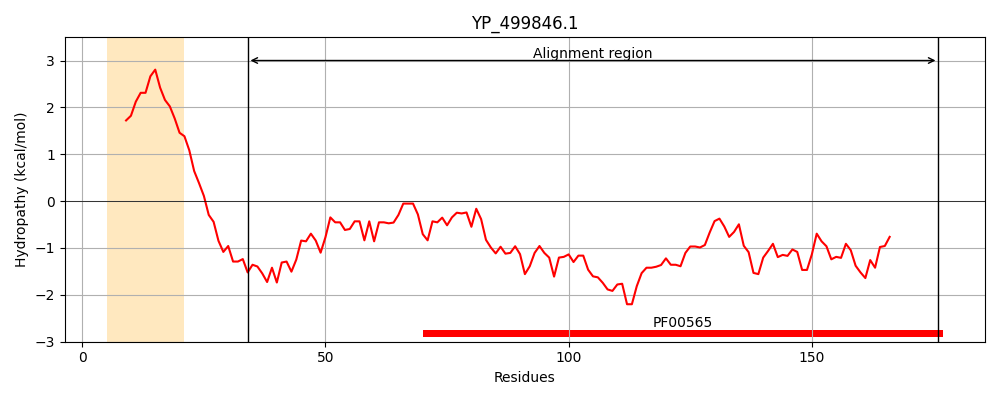
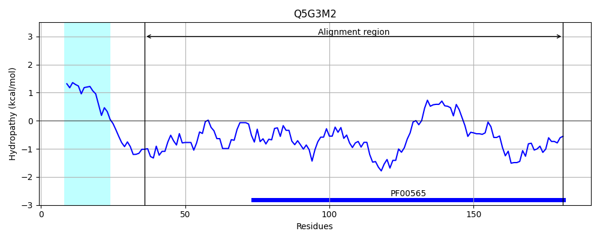
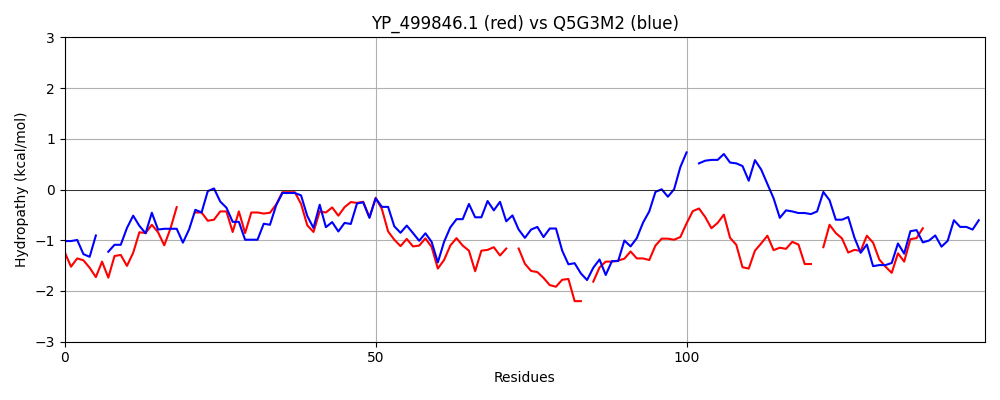

Hit Accession: Q5G3M2
Hit TCID: 3.A.7.19.1
Hit Description: gnl|BL_ORD_ID|14347 gnl|TC-DB|Q5G3M2|3.A.7.19.1 PcfT OS=Enterococcus faecalis GN=pcfT PE=4 SV=1
Mach Len: 148
e:0.000000
Query TMS Count : 1
Hit TMS Count: 1
TMS-Overlap Score: 0.800000
Predicted Substrates:CHEBI:4291;deoxyribonucleic acid
BLAST Alignment:
Score: 288 , Bit scores: 115 bits, E-value: 7.0e-33, Alignment length: 148, Percentage identity: 48
Query: 34 GTNHETVQDLNGKDKVHVQ--RVVDGDTFIANQNGKEIKVRLIGVDTPETVKPNTPVQPFGKEASNYSKKTL-TNQDVYLEYDK-EKQDRYGRTLAYVWISKDRMYNKELVEKGLAREKYF-SPNGKYRNVFIEAQNKAKQQKLNIWS 176
GT + T Q ++ +++ + R VDGDT + +GKE KVR + VDTPETVKP T VQPFG EASN +K+ L T ++ EYDK ++ DRYGRTL Y+++ + + LV GLAR Y PN KY EAQ KAK + L IWS
Sbjct: 36 GTGNFT-QTISNDNRIPAEFVRHVDGDTTVLRIDGKEQKVRFLLVDTPETVKPKTKVQPFGLEASNRTKELLSTASEITFEYDKGDRTDRYGRTLGYIFVD-GMLLQETLVRDGLARVAYVKEPNTKYLLELEEAQEKAKNESLRIWS 181 | Protein Hydropathy Plots: |
|---|
|  |  |
Pairwise Alignment-Hydropathy Plot:
|
|---|
|  |